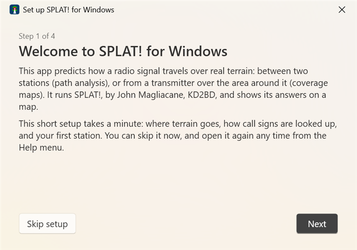
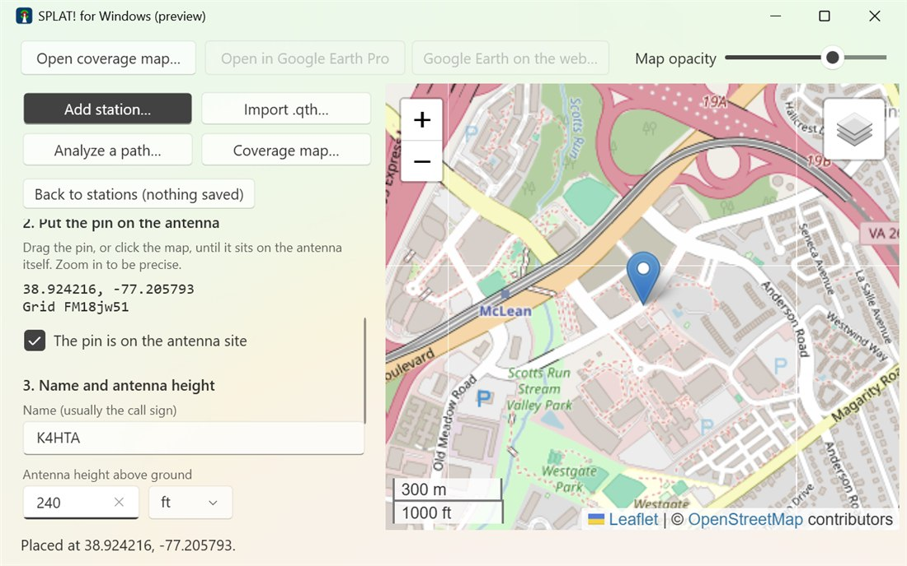
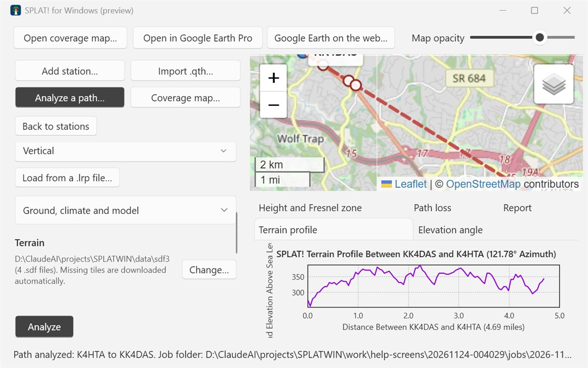
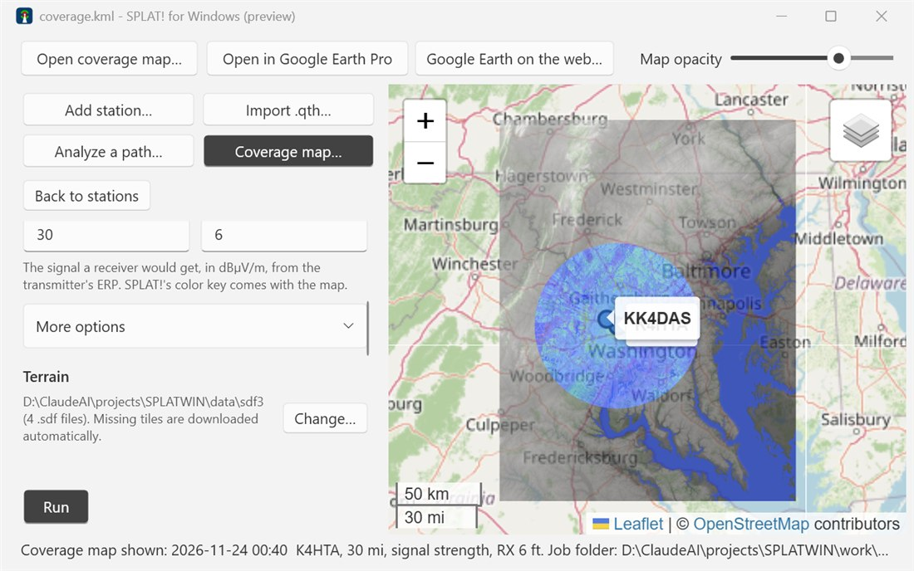

From an empty app to your first coverage map, about ten minutes. You need your
station's position (a call sign, address or grid square is enough to start) and, for maps, your
transmitter's frequency and ERP.
The setup on first start
The first time the app opens, a short setup offers to do steps 1 to 3 with you: where terrain goes,
how call signs are looked up, and your first station. You can skip it, and open it again any time from
Help > Setup…. Everything it does can also be done
as below.

The setup's first page.
Step by step
Terrain: nothing to do. SPLAT! needs terrain elevation data. The app downloads the tiles
each job needs, once, into its terrain folder. See Terrain if you
already have SPLAT! terrain files (.sdf) to use instead.
Call-sign lookups (optional). US call signs are looked up free on callook.info. For
call signs worldwide, and often a better position, sign in to QRZ.com with
QRZ.com: sign in… (top right). That needs a QRZ XML Logbook Data
subscription; see QRZ.com.
Add your station. Click Add station…. Type your call sign and
click Find (or use the Address, Grid, Coordinates or Map tab). A pin
appears on the map: drag it onto the antenna itself, zooming in to be precise, and tick
The pin is on the antenna site. Give the antenna height above ground and
click Save station. Add a second station (a friend, a repeater) the same
way. More in Stations.

Adding a station: the pin goes on the antenna.
Analyze a path. Click Analyze a path…. Choose the transmitter and
the receiver, type the transmitter's frequency (MHz) and ERP (watts), and click
Analyze. The summary shows the signal at the receiver and whether the
terrain blocks the line of sight; the path is drawn on the map and the graphs open below it.
See Path analysis. To see what's in the way, click
3D view… (The 3D path view).

A path analysis: the summary on the left, the path on the map, the graphs below.
Make a coverage map. Click Coverage map…. Choose the
transmitter (its frequency and ERP are already there from step 4), leave
Signal strength, set the radius (30 miles is a good start) and the
receiver antenna height (6 ft for a car or a handheld), and click Run.
The map appears over the street map; click any point on it to read the signal there. See
Coverage maps and
reading the color key.

A coverage map, with SPLAT!'s color key in the panel.
Open it in Google Earth (optional).Open in Google Earth Pro opens
the map or path you're looking at, with your stations as pins. No Google Earth Pro?
Google Earth on the web… shows how to open the same file in a browser.
See Google Earth.
Moving around the app
The four buttons at the top of the left panel (Add station…,
Import .qth…, Analyze a path… and
Coverage map…) are always there; the one you're using is highlighted. Click
another to switch straight to it. Back to stations, just below them, returns to
the stations list. While a path or a map is being worked out, the switching waits: use
Cancel next to Run or Analyze
to stop it.
Next
Every run is kept in its own job folder under Documents\SPLAT\Jobs.
Defaults for new maps, and the terrain folder, are in Settings.
Something went wrong? Troubleshooting explains every message.